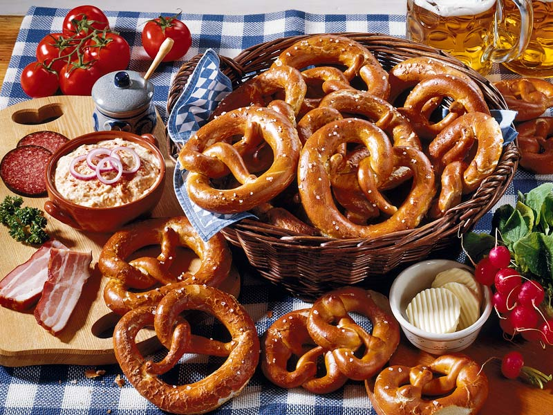
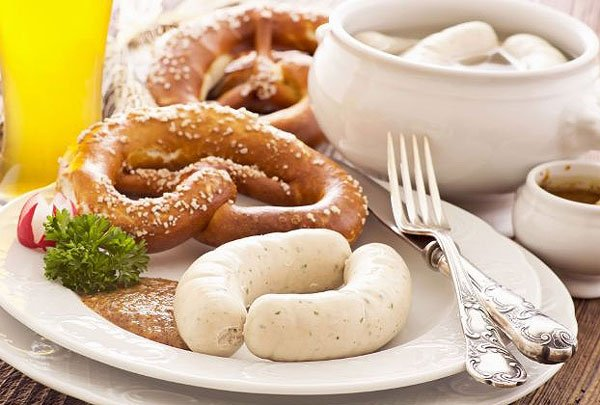
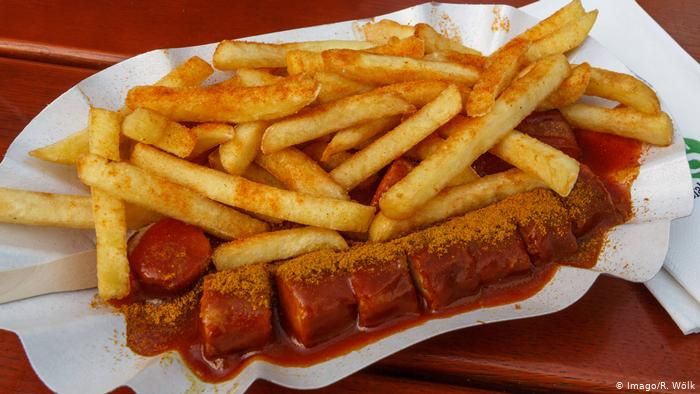
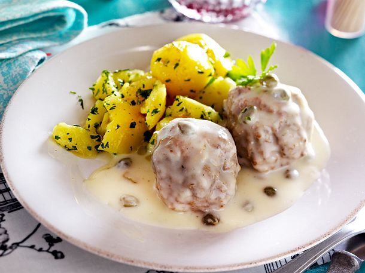
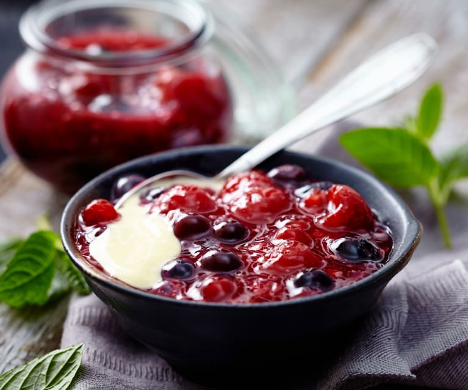

Também conhecido como Bretzel, Laugenbrezel ou Pretzel, é especialidade do sul da Alemanha e costuma acompanhar a salsicha branca. Em sua forma tradicional ele é povilhado com sal grosso, coberto de queijo ou sementes de abóbora, também pode ser cortado ao meio e recheado de manteiga e cebolinha.

Weißwurst ou Weisswurst é um prato muito consumido Alemanha. É feito da carne de vitela e touchindo de porco fresco, geralmente é temperada com salsa, limão, cebola, gengibre e cardamono, porém existe outras variações.

É um prato de fast-food que consiste de em salsicha de porco cortada e temperada com ketchup e curry.

Também conhecido como Soßklopse, consiste em almôndegas com um molho béchamel com alcaparras.

Uma sobremesa da Dinamarca e do norte da Alemanha feita de frutas doces. Seu nome traduzido significa grumos vermelhos.
